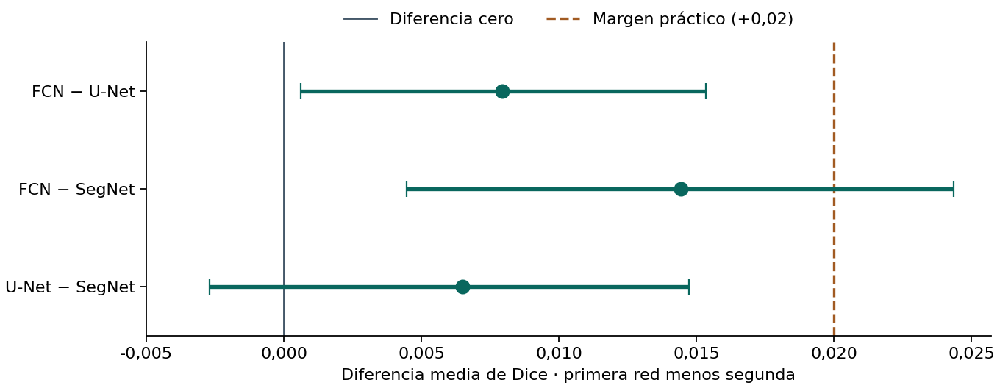
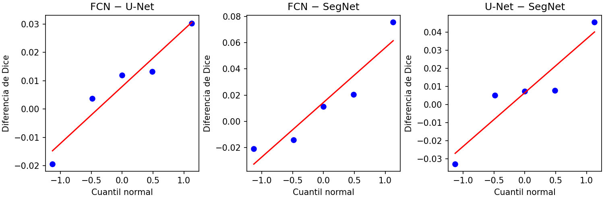
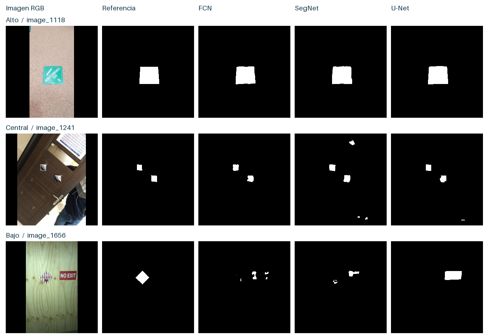
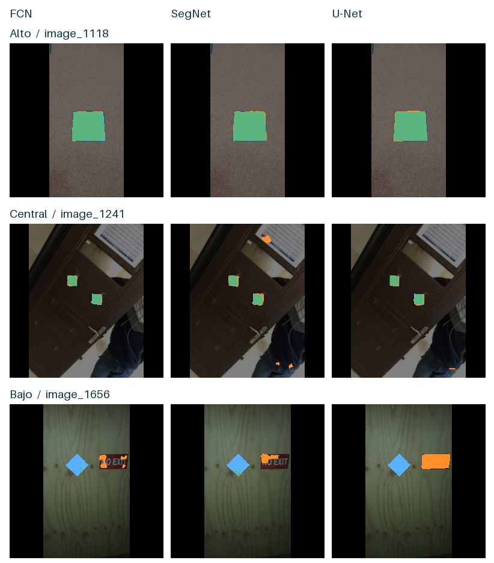
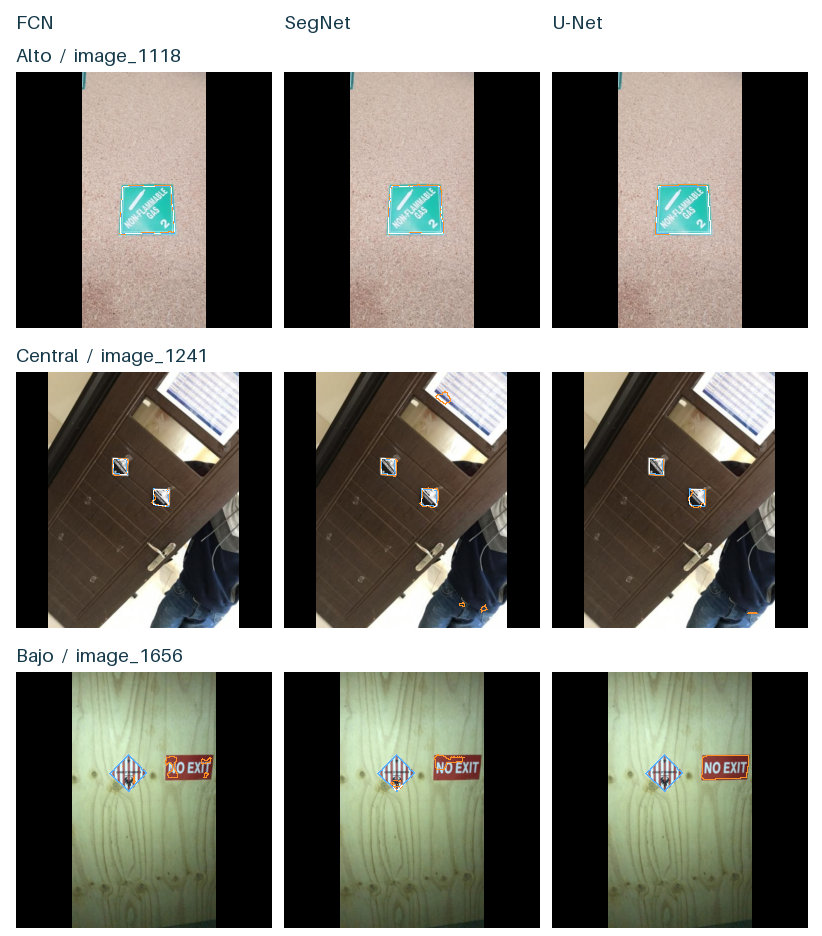

Resultados y baseline#
FCN es la referencia de la entrega. Obtuvo el mayor Dice medio en validación (0,8330), seguida de U-Net (0,8272) y SegNet (0,8193). En test, su ventaja media sobre U-Net es 0,0079 Dice. El intervalo pareado por grupos va de 0,0006 a 0,0153 con las cinco semillas fijas. Su extremo superior sigue por debajo del margen práctico propuesto de 0,02.
Qué se estima#
La tabla de imágenes por clase y partición da el contexto para interpretar estas métricas binarias.
Dice mide \(2TP/(2TP+FP+FN)\) e IoU mide \(TP/(TP+FP+FN)\) para la etiqueta. La mIoU promedia IoU de etiqueta y fondo. La exactitud mide la fracción de píxeles válidos correctamente clasificados. Dos máscaras vacías reciben Dice e IoU de etiqueta iguales a 1; si solo una está vacía, reciben 0.
Las tablas se regeneran a partir de las 3.270 filas de por_imagen.csv. Se comprueba la correspondencia de cada identificador con su grupo congelado. En cada arquitectura y semilla se promedian primero las imágenes del mismo grupo y después los 122 grupos con igual peso. Se promedian las cinco semillas y se cotejan las métricas con por_corrida.csv y resumen.csv.
Del CSV al Dice de la tabla. En analisis_entregable.py, blocks[m, s, g] reúne las métricas de las imágenes del modelo m, la semilla s y el grupo g. El primer promedio representa a cada grupo; el segundo da a cada grupo el mismo peso. El Dice final de FCN es la media de sus cinco valores de corrida.
cube = np.array([[[np.mean(blocks[m, s, g], axis=0) for g in groups]
for s in SEEDS] for m in MODELS])
assert cube.shape == (3, 5, 122, 4) and np.isfinite(cube).all()
means = cube.mean(axis=2)
Dos fuentes de incertidumbre. El IC percentil del 95 % remuestrea 122 grupos con reemplazo 10.000 veces (semilla 20261107). Cada selección conserva juntas las imágenes del grupo, todas sus semillas y los tres modelos. Estos intervalos son marginales para cada contraste y condicionales a las cinco semillas entrenadas. La DE muestral entre las cinco medias por corrida describe por separado la variación de entrenamiento en el mismo test. No se cuentan las 3.270 filas como réplicas independientes.
Para los contrastes de semillas se emparejan corridas de igual semilla sobre el mismo test. Se aplica Wilcoxon bilateral exacto y se ajustan los tres valores p con Holm. El tamaño de efecto \(d\) es la diferencia media por grupo dividida por la DE muestral de esas diferencias, tras promediar las cinco semillas. Su IC repite el cálculo completo en cada remuestra de grupos. P(superior) es la fracción de grupos en los que gana la primera red, contando medio punto por empate.
Del par de redes a la barra del gráfico. d contiene las 122 diferencias emparejadas de Dice y draws las 10.000 remuestras de grupos. Estos dos renglones calculan los extremos del intervalo dibujado.
samples = d[draws]
low,high = np.quantile(samples.mean(axis=1),[.025,.975])
Red |
Dice |
IoU |
mIoU |
Exactitud |
DE semillas |
IC 95 % por grupos (Dice) |
|---|---|---|---|---|---|---|
FCN |
0,8531 |
0,7673 |
0,8783 |
0,9899 |
0,0063 |
0,8281 a 0,8762 |
U-Net |
0,8451 |
0,7612 |
0,8747 |
0,9889 |
0,0135 |
0,8161 a 0,8716 |
SegNet |
0,8386 |
0,7504 |
0,8691 |
0,9884 |
0,0353 |
0,8124 a 0,8634 |
Diferencias pareadas#

El punto es la diferencia media; la barra es el IC del 95 % al remuestrear los mismos grupos con las cinco semillas fijas. A la derecha de cero, la media favorece a la primera red. Para FCN frente a U-Net, la barra completa queda antes de la línea de +0,02. Para U-Net frente a SegNet, la barra atraviesa cero.
Primer modelo menos segundo |
Δ Dice |
IC 95 % grupos |
d por grupo |
IC 95 % de d |
P(superior) |
p Shapiro (semillas) |
p exacto |
p Holm |
MMD aprox. |
|---|---|---|---|---|---|---|---|---|---|
FCN − U-Net |
0,0079 |
0,0006 a 0,0153 |
0,1898 |
0,0149 a 0,3702 |
0,4836 |
0,7569 |
0,4375 |
1,0000 |
0,0262 |
FCN − SegNet |
0,0144 |
0,0045 a 0,0244 |
0,2559 |
0,0819 a 0,4393 |
0,6230 |
0,4008 |
0,8125 |
1,0000 |
0,0555 |
U-Net − SegNet |
0,0065 |
-0,0027 a 0,0147 |
0,1303 |
-0,0438 a 0,3880 |
0,6885 |
0,4276 |
0,4375 |
1,0000 |
0,0401 |
Contraste global de Friedman por semilla: Q = 1,6000, p exacto = 0,5216 al permutar los rangos de las tres redes dentro de cada uno de los cinco bloques (7.776 asignaciones bajo intercambiabilidad).
Contrastes sobre grupos con semillas fijas#
Para la pregunta de generalización a otros grupos, se contrasta el centro de las diferencias de Dice de los 122 grupos, promediadas sobre las mismas cinco semillas. Wilcoxon bilateral supone independencia entre grupos y simetría de sus diferencias bajo la hipótesis nula. Se obtiene la distribución exacta por asignación de signos a los rangos absolutos, omitiendo ceros y promediando empates. Holm se aplica a esta familia de tres contrastes. La MMD para grupos usa la misma aproximación normal de planificación con la DE de las diferencias por grupo y 122 bloques. Un IC para una media y un contraste de rangos pueden dar lecturas diferentes si las diferencias son asimétricas.
Contraste |
p exacto (grupos) |
p Holm (grupos) |
MMD aprox. (grupos) |
|---|---|---|---|
U-Net − SegNet |
0,0001 |
0,0002 |
0,0146 |
FCN − SegNet |
0,0006 |
0,0012 |
0,0165 |
FCN − U-Net |
0,4616 |
0,4616 |
0,0122 |

Los extremos de cada gráfico dependen de apenas una semilla. Con cinco puntos, Shapiro–Wilk y el gráfico Q–Q tienen poca capacidad diagnóstica. Se eligió la prueba bilateral exacta de rangos con signo, que supone simetría de las diferencias entre semillas y evita estimar una varianza común entre redes.
Presupuesto observado por corrida#
Red |
Semilla |
Parámetros |
Épocas |
Mejor época |
Dice val. |
Dice test |
CPU (min) |
T4 (min) |
|---|---|---|---|---|---|---|---|---|
FCN |
11 |
72145 |
30 |
26 |
0,8331 |
0,8609 |
40.4 |
0.0 |
FCN |
23 |
72145 |
28 |
23 |
0,8489 |
0,8569 |
37.2 |
0.0 |
FCN |
37 |
72145 |
30 |
25 |
0,8279 |
0,8493 |
0.0 |
14.1 |
FCN |
53 |
72145 |
18 |
13 |
0,8086 |
0,8448 |
0.0 |
8.3 |
FCN |
71 |
72145 |
29 |
24 |
0,8462 |
0,8533 |
0.0 |
13.5 |
U-Net |
11 |
118273 |
26 |
21 |
0,8274 |
0,8477 |
91.4 |
0.0 |
U-Net |
23 |
118273 |
19 |
14 |
0,8133 |
0,8267 |
0.0 |
8.8 |
U-Net |
37 |
118273 |
30 |
29 |
0,8243 |
0,8456 |
0.0 |
13.9 |
U-Net |
53 |
118273 |
30 |
29 |
0,8429 |
0,8643 |
0.0 |
13.9 |
U-Net |
71 |
118273 |
23 |
18 |
0,8282 |
0,8414 |
0.0 |
11.1 |
SegNet |
11 |
85761 |
30 |
25 |
0,8238 |
0,8404 |
68.0 |
0.0 |
SegNet |
23 |
85761 |
11 |
6 |
0,7494 |
0,7813 |
2.3 |
4.7 |
SegNet |
37 |
85761 |
28 |
23 |
0,8237 |
0,8379 |
0.0 |
13.0 |
SegNet |
53 |
85761 |
25 |
20 |
0,8468 |
0,8592 |
0.0 |
11.6 |
SegNet |
71 |
85761 |
30 |
27 |
0,8529 |
0,8744 |
0.0 |
14.9 |
Se sumaron los segundos registrados por época completa. La migración de SegNet con semilla 23 conserva la parte local del historial. Los totales excluyen interrupciones y transferencias. Las diferencias de duración mezclan arquitectura, hardware y parada temprana.
Dice medio de los mejores checkpoints de validación por red: FCN 0,8330, U-Net 0,8272, SegNet 0,8193.
Huella SHA-256 del manifiesto de test: 7340a0cab140a8180b4a669260809eb79e86be7cb43ef87f5cac9bbd22317e81.
Aciertos y errores#
Se fijó FCN con semilla 11 y se eligieron tres posiciones en su distribución de Dice por imagen. Son ejemplos descriptivos escogidos después del test. En un empate se usa el identificador como desempate.
Posición |
Imagen |
Dice de FCN |
|---|---|---|
Mínimo |
image_1656 |
0,0339 |
Central (posición 110) |
image_1241 |
0,9162 |
Máximo |
image_1118 |
0,9814 |
La selección depende de FCN. Las mismas imágenes permiten comparar las otras dos redes, pero no representan necesariamente sus propios cuantiles. Un caso central por rango puede tener Dice alto si la distribución es asimétrica.
Lectura de las predicciones#

De arriba abajo aparecen los casos de Dice alto, central y bajo de FCN. La primera columna muestra la fotografía original adaptada al lienzo de evaluación de 256 × 256; la segunda, la anotación disponible en esas coordenadas. El blanco representa etiqueta. Las bandas negras de relleno se excluyen de los conteos.

El verde indica verdaderos positivos, el naranja falsos positivos y el azul falsos negativos respecto de la anotación. En image_1118, las tres redes cubren casi toda la etiqueta. En image_1241, SegNet localiza ambos rótulos, pero también activa regiones fuera de ellos (316 FP frente a 68 de FCN). En image_1656, U-Net marca el letrero «NO EXIT» y omite los 730 píxeles del rombo anotado. FCN recupera solo 17 y SegNet 54. Un modelo puede segmentar una región con bordes nítidos y, aun así, localizar el objeto equivocado.

El azul delinea la referencia, el naranja la predicción y el blanco los píxeles de borde compartidos. Los trazos son el borde interior de un píxel obtenido por erosión de 3 × 3 dentro del área válida. En el ejemplo alto predominan discrepancias pequeñas cerca del perímetro. En el difícil, referencia y predicción de U-Net están separadas espacialmente: atribuir ese fallo únicamente a imprecisión del borde sería incorrecto. Estas láminas no constituyen una medición de Boundary IoU.
Caso |
Red |
VP |
FP |
FN |
Dice CPU |
Dice del ZIP |
|---|---|---|---|---|---|---|
image_1118 |
FCN |
2485 |
45 |
49 |
0.98144 |
0.98144 |
image_1118 |
SegNet |
2517 |
97 |
17 |
0.97786 |
0.97786 |
image_1118 |
U-Net |
2534 |
121 |
0 |
0.97668 |
0.97668 |
image_1241 |
FCN |
481 |
68 |
20 |
0.91619 |
0.91619 |
image_1241 |
SegNet |
490 |
316 |
11 |
0.74981 |
0.74981 |
image_1241 |
U-Net |
474 |
91 |
27 |
0.88931 |
0.88931 |
image_1656 |
FCN |
17 |
256 |
713 |
0.03390 |
0.03390 |
image_1656 |
SegNet |
54 |
271 |
676 |
0.10237 |
0.10237 |
image_1656 |
U-Net |
0 |
1116 |
730 |
0.00000 |
0.00000 |
Diferencia absoluta máxima CPU frente a T4 sobre las cuatro métricas de los nueve ejemplos: 0. El cotejo es por métricas; el ZIP no contiene mapas T4 para certificar identidad píxel a píxel.
Discusión, limitaciones y conclusiones#
La ventaja de FCN sobre U-Net tiene signo positivo en promedio, aunque FCN gana en menos de la mitad de los grupos. Una ganancia mayor en ciertos grupos puede compensar pérdidas menores en otros. Los IC por grupos cuantifican esa heterogeneidad con los modelos ya entrenados. Los contrastes por semilla responden a otra pregunta: con cinco pares, el menor p bilateral exacto posible es 0,0625, incluso antes de Holm. El resultado por semillas no demuestra superioridad reproducible ni equivalencia.
El protocolo previo propuso δ = 0,02 de Dice absoluto. Al nivel de FCN, subir de 0,8531 a 0,8731 reduciría el déficit respecto de Dice 1 de 0,1469 a 0,1269, aproximadamente un 13,6 %. Este umbral de trabajo exige una mejora que compense la complejidad de un modelo posterior. No hay calibración en incidentes portuarios, acuerdo entre anotadores o costos de omitir un rótulo que lo convierta en umbral de seguridad. Solo la estimación puntual de la diferencia FCN–SegNet se acerca a dos puntos y su intervalo por grupos cruza ese margen.
En los grupos con semillas fijas, el contraste de rangos entre FCN y U-Net arroja p ajustado 0,4616. Frente a SegNet, FCN y U-Net tienen p ajustados 0,0012 y 0,0002 respectivamente. La tabla por grupos también muestra que el intervalo para la diferencia media U-Net frente a SegNet incluye cero. Los rangos dan peso al orden de las diferencias, mientras que la media conserva su magnitud. Ninguno de estos contrastes por grupos establece estabilidad frente a nuevos entrenamientos.
La columna MMD es una aproximación de planificación para la variación entre semillas: \((z_{1-0,05/6}+z_{0,80})s_d/\sqrt{5}\), con desviación de las diferencias pareadas y ajuste conservador para tres contrastes bilaterales. Para FCN frente a U-Net da 0,0262 Dice, mayor que δ. Esta aproximación normal con cinco semillas es inestable. No constituye la potencia del Wilcoxon exacto, que con este diseño no puede rechazar al 5 %. Para un futuro modelo, la MMD dependerá de su propia variación pareada frente a FCN.
SegNet presenta la mayor dispersión entre semillas. Su peor corrida coincide con la migración de hardware; este diseño no separa un efecto del equipo de un efecto de la semilla. La agrupación visual puede omitir dependencias y las máscaras tienen cobertura imperfecta. Con estas restricciones, FCN ofrece el mejor punto de referencia observado, con menos parámetros que las otras dos redes. Una mejora futura debe contrastarse frente a esa misma referencia y valorar tanto su incertidumbre como el margen práctico.